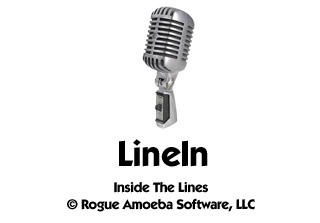
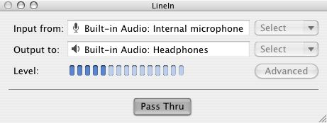
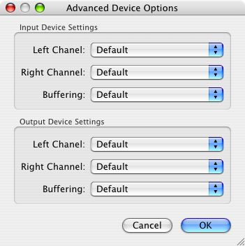

LineIn 2.0.3 Manual

LineIn v2.0.3
www.rogueamoeba.com
New in 2.0.3
+ Bug fixes and improvements for Mac OS X 10.5 (Leopard)
Welcome!
LineIn is a simple application for OS X, designed to enable the soft playthru of audio from input devices. In simpler terms, you can use LineIn to hear sound coming in through a microphone or any other device plugged in to your Sound In port, just as was once available with OS 9's "Play input through output device" option. It can be used with Audio Hijack to record audio from external devices.
Printing
To print this entire manual, download the PDF version from: http://www.rogueamoeba.com/freebies/download/LineInManual.pdf
Key Feature
Pass Thru of audio from input devices to output devices
Purchasing
LineIn is free software. Enjoy! If you like LineIn, try out our other applications at http://www.rogueamoeba.com/
Contact:
Web: http://www.rogueamoeba.com/
Support: http://www.rogueamoeba.com/support/
E-Mail: freebies@rogueamoeba.com
LineIn is Copyright ©2005-2007, Rogue Amoeba Software, LLC
This is the LineIn Manual. Contained within this manual, you'll find a full overview of LineIn
What Is LineIn?
LineIn is a simple application for OS X to enable the soft playthru of audio from input devices. For the latest information and updates on LineIn, come to our website at http://www.rogueamoeba.com/freebies.
RequirementsLineIn v2.0.3
Released 10.19.2007
- LineIn now supports Mac OS X 10.5 (Leopard)
LineIn v2.0.2
Released 01.20.2006
- LineIn is now a Universal Binary
LineIn v2.0.1
Released 10.25.2005
- auverse/auline: fixed silence gen channels
- auverse/rbuffer: finally fixed the oldest crashing bug ever
- Silence Input/Output
LineIn v2.0
Released 01.18.2005
+ LineIn has been completely revamped with a new interface and many new options.
LineIn v1.2
Released 10.20.2003
+ Full OS X 10.3 (Panther) support
LineIn v1.0
Released 04.03.2003
+ First release - it's all new.

When LineIn loads, you'll see the main window shown above. This window allows you to select the Input device from which to pull audio and the Output device to/through which it will be played. For adjusting advanced settings such as device channels, click the Advanced button. Most of the settings found here should generally be left in their default states.
Passing Audio Through
To pass audio through an output device, you first need to set an Input device from which to pull audio. Then the Output device must be set - this is the device through which the audio will play. Finally, click the Pass Thru button, and any audio played through the Input will run through the system and be heard via the Output. That's it!
This section of the Help gives details on what each piece of LineIn does. Click on one of the sub-sections to the left to jump to the specified window.
Control Windows - The basic control windows of LineIn contain all its key settings.
Other Windows - Information on the other minor windows in LineIn is found here.
Menu Reference - This section explains what each and every menu item does in obsessive, boring detail.
The main window seen above houses all of LineIn's main settings.
Setup Controls
Input From: Select the desired input device, from a list provided by the system.
Output To: Select the desired output device, from a list provided by the system.
Level Meters - The level meters show activity when audio is being passed through LineIn.
Pass Thru - When clicked, audio coming into the selected Input will be played audibly through the selected Output.

Advanced Controls
Input Device Settings
Left Channel: For devices with more than two channels, select the channel which will serve as the left.
Right Channel: For devices with more than two channels, select the channel which will serve as the right.
Buffering: Adjusts the size of the audio buffer for the input, in frames. A larger buffer is less prone to skipping but has higher latency (delay), while a smaller buffer has lower latency but may be more prone to skipping. This is best left at Default to start.
Output Device Settings
Left Channel: For devices with more than two channels, select the channel which will serve as the left.
Right Channel: For devices with more than two channels, select the channel which will serve as the right.
Buffering: Adjusts the size of the audio buffer for the output, in frames. A larger buffer is less prone to skipping but has higher latency (delay), while a smaller buffer has lower latency but may be more prone to skipping. This is best left at Default to start.
Help Window
You're looking at it. This displays the LineIn Manual, and can be accessed by pressing Command-? or choosing LineIn Manual from the Help menu.
About Window
Displays the credits for LineIn.
The following is a list of the relevant menu items in LineIn including a short description of each item's function.
LineIn Menu
About LineIn - Shows LineIn's credits
Check For Update - Checks via the Internet for updates to LineIn
Preferences... - Opens LineIn's Preferences window
Hide LineIn - Conceals all of LineIn's windows
Hide Others - Conceals all other applications
Show All - Reveals all other applications
Quit LineIn - Quits LineIn
Window Menu
Close - Closes the foremost window
Zoom - Zooms the foremost window
Minimize - Minimizes the foremost window to the Dock
Help Menu
LineIn Manual - Opens this help window
Rogue Amoeba Website - Takes you to our homepage
E-Mail Rogue Amoeba - Opens an email to Rogue Amoeba Support
View Online FAQ - Takes you to our Slipstream FAQ
Visit Online Forums - Takes you to our discussion forums
Interface:
Float above other applications - Turning this on causes the LineIn window to float on top of other windows, even when the application is selected.
Other:
Automatically check for updates - With this on, LineIn compares its own version number with the most current version available from our server. Leave this on to stay up-to-date.
We now present the conclusion to the LineIn Manual
-Credits - The butler didn't do it - these people did.
-User License - Let your lawyer explain it all to you.
-Contact - How to get in touch with Rogue Amoeba.
LineIn is © Rogue Amoeba Software LLC, 2005-2007.
All Rights Reserved.
All other product names mentioned herein are used for identification purposes only and may be trademarks or copyrights of their respective companies.
License
Distribution
Unless explicitly stated in writing, Rogue Amoeba Software does not grant permission to distribute LineIn ("The Software") for profit in any form, including but not limited to, electronic information service distribution, bulletin board distribution, and magnetic or optical medium distribution. Non-profit distribution of The Software is acceptable provided that The Software is not modified in any way, and the complete works of The Software are included in the distribution package. If The Software is to be included in a distribution package, Rogue Amoeba requests one complimentary copy of said package, sent to the following address:
Disclaimer
LineIn ("The Software") is provided as is. Rogue Amoeba Software ("The Author") is not responsible for any damage to the user's computer system or data and in no event will The Author, its officers, directors, employees or agents be responsible to the user for any consequential, incidental, or indirect damages (including damages for loss of business profits, business interruption, lost of business information, and the like) arising out of the use or inability to use the The Software, even if The Author has been advised of the possibility of such damages. Because some states do not allow the exclusion or limitation of liability for consequential or incidental damages, the above limitations may not apply to you. Further, the consumer agrees that using this software in any way illegal, or even for the purposes of assessing its viability for illegal usage, is prohibited.
What that said: Be safe when you use the software. Be aware that it's simply a tool designed to make your life better. Don't use it to do illegal or evil things. If you do, be ready to take responsibility for your own actions.
LineIn Homepage
http://www.rogueamoeba.com/freebies
Rogue Amoeba Homepage
http://www.rogueamoeba.com
LineIn Support
freebies@rogueamoeba.com
Join the Rogue Amoeba low-traffic announcement list. There's no spam, EVER. It's as simple as that.
http://www.rogueamoeba.com/company/lists/maclist.php